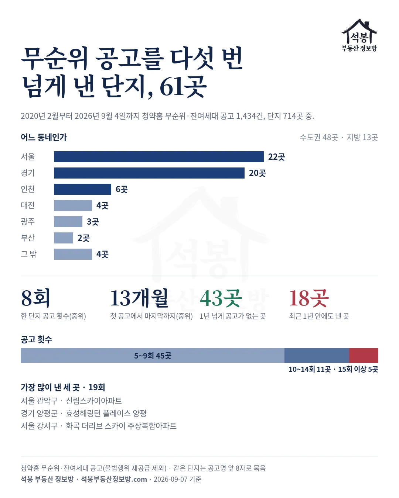
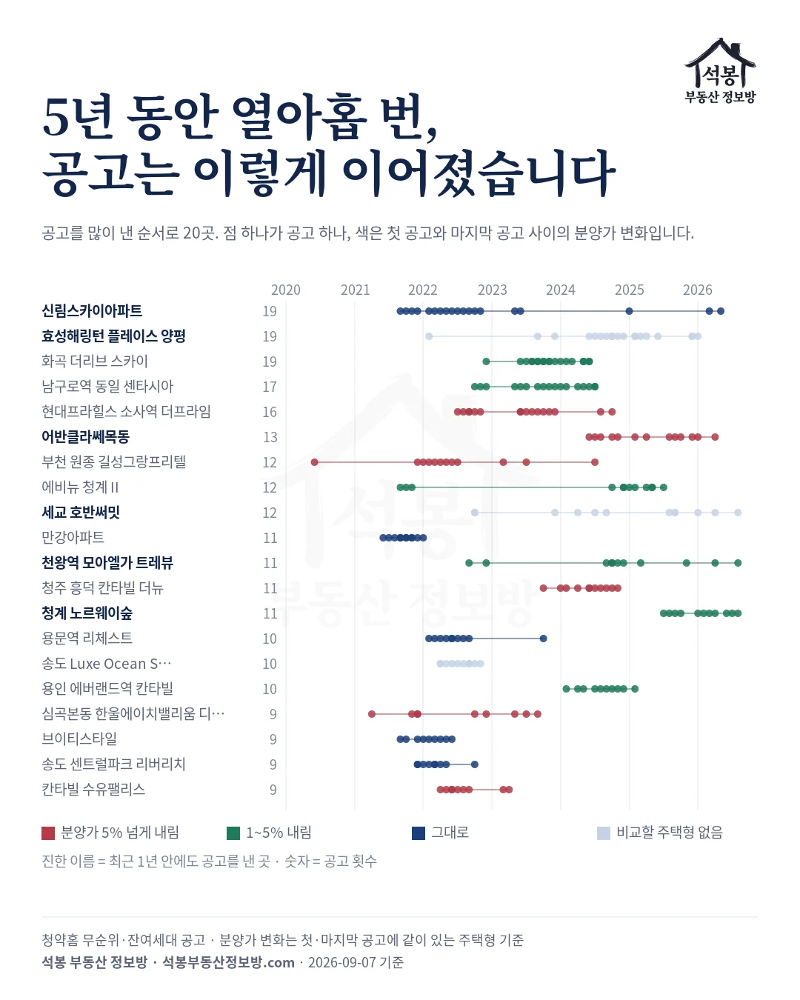
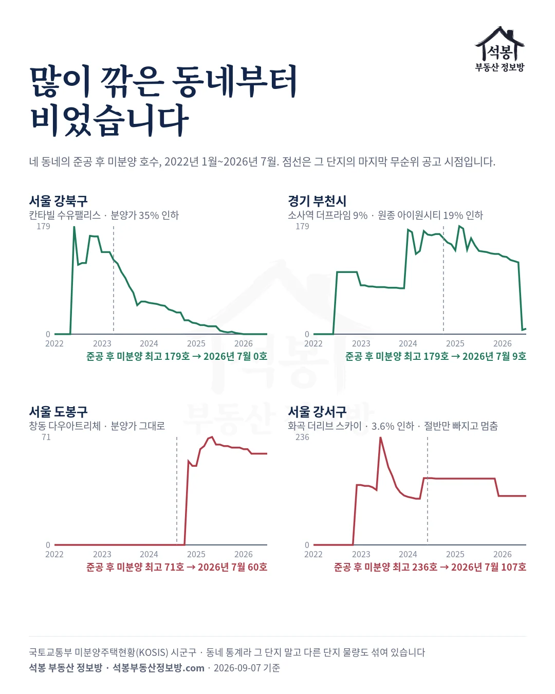
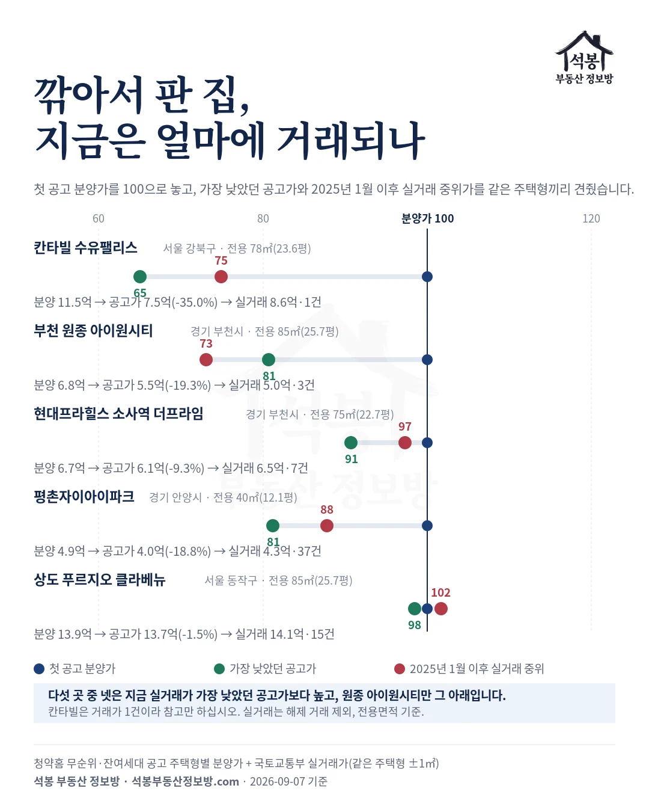

1편 다 지은 미분양이 4배, 2편 61곳이 쌓고 99곳이 털었다, 3편 청약 미달의 절반 가까이가 미분양이 된다까지 왔습니다. 마지막 질문은 이것입니다. 그렇게 남은 집은 어떻게 팔리는가.
청약홈에 2020년 2월부터 2026년 9월 4일까지 올라온 무순위·잔여세대 공고 1,434건, 단지 714곳을 봤습니다. 같은 단지가 다섯 번 넘게 공고를 낸 곳이 61곳입니다. 그중 분양가를 5% 넘게 깎은 곳은 16곳이고, 그 동네의 준공 후 미분양은 0호와 9호까지 내려왔습니다. 값을 그대로 둔 동네는 4년째 그 자리입니다.
하나. 다섯 번 넘게 공고를 낸 61곳
61곳 중 서울이 22곳, 경기 20곳, 인천 6곳으로 수도권이 48곳입니다. 한 단지가 낸 공고는 중간값으로 8회, 첫 공고에서 마지막 공고까지 13개월이 걸렸습니다. 가장 많이 낸 세 곳은 19회로 관악구 신림스카이, 양평 효성해링턴 플레이스, 강서구 화곡 더리브 스카이입니다.
신림스카이는 2021년 9월부터 2026년 5월까지 같은 4세대를 19번 내놓았고, 값은 5억 9,900만원 그대로입니다. 61곳 중 43곳은 1년 넘게 새 공고가 없고, 18곳은 최근 1년 안에도 공고를 냈습니다. 어반클라쎄목동, 천왕역 모아엘가 트레뷰, 청계 노르웨이숲, 오산 세교 호반써밋이 지금도 내는 쪽입니다.

가입하시면 지역 시장조사 보고서(약식)를 2회 무료로 요청하실 수 있습니다.
둘. 값을 깎은 곳과 안 깎은 곳
공고에는 주택형별 분양가가 적혀 있어, 첫 공고와 마지막 공고에 같은 주택형이 있는 51곳은 값을 깎았는지 알 수 있습니다. 5% 넘게 내린 곳이 16곳, 1~5% 내린 곳이 17곳, 그대로인 곳이 18곳입니다. 가장 많이 내린 열 곳을 표로 놓았습니다.
| 단지 | 동네 | 공고 | 기간 | 첫 공고가 → 가장 낮은 공고가 | 변동 |
|---|---|---|---|---|---|
| 칸타빌 수유팰리스 | 서울 강북구 | 9회 | 2022.04~2023.04 | 11.5억 → 7.5억 | −35.0% |
| 부천 원종 아이원시티 | 경기 부천시 | 7회 | 2022.04~2024.02 | 6.8억 → 5.5억 | −19.3% |
| 평촌자이아이파크 | 경기 안양시 | 6회 | 2022.03~2023.10 | 4.9억 → 4.0억 | −18.8% |
| 신독산 솔리힐 뉴포레 | 서울 금천구 | 8회 | 2022.08~2023.09 | 8.8억 → 7.8억 | −11.4% |
| 심곡본동 한울에이치밸리움 디그니어스 | 경기 부천시 | 9회 | 2021.04~2023.09 | 3.8억 → 3.4억 | −9.5% |
| 현대프라힐스 소사역 더프라임 | 경기 부천시 | 16회 | 2022.07~2024.10 | 6.7억 → 6.1억 | −9.3% |
| 어반클라쎄목동 | 서울 양천구 | 13회 | 2024.06~2026.04 | 9.5억 → 8.7억 | −8.2% |
| 청주 흥덕 칸타빌 더뉴 | 충북 청주시 | 11회 | 2023.10~2024.11 | 2.5억 → 2.3억 | −8.2% |
| 부천 원종 길성그랑프리텔 | 경기 부천시 | 12회 | 2020.06~2024.07 | 4.6억 → 4.2억 | −8.0% |
| 남천 세원 수 | 부산 수영구 | 8회 | 2021.08~2022.04 | 3.8억 → 3.5억 | −8.0% |
칸타빌 수유팰리스가 가장 큽니다. 2022년 4월 첫 무순위 공고에서 전용 78㎡(23.6평)의 최고 분양가가 11억 4,780만원이었는데, 2023년 4월 아홉 번째 공고에서 7억 4,600만원으로 내려 134세대를 다시 내놓았습니다. 그 뒤로는 공고가 없습니다.
부천이 눈에 띕니다. 표 열 곳 중 네 곳이 부천이고, 원종 아이원시티는 공고 제목에 「잔여세대 할인분양」을 달고 전용 85㎡(25.7평)를 6억 8,400만원에서 5억 5,200만원으로 내렸습니다. 소사역 더프라임은 열여섯 번 공고를 내며 조금씩 깎아 2024년 10월 마지막 공고는 1세대였습니다.
한 가지 짚어 둘 것이 있습니다. 공고에 적힌 세대수는 그 회차에 내놓은 집 수이지 남은 집 수가 아닙니다. 칸타빌은 2023년 3월 4세대를 냈다가 다음 달 134세대를 냈으니, 공고 세대수가 줄었다고 다 팔린 것으로 읽으면 안 됩니다.

셋. 팔렸는지는 동네 미분양 통계가 말해 줍니다
다 팔렸다는 말은 시행사 말이라, 국토교통부 미분양 통계로 그 동네를 봤습니다. 강북구 준공 후 미분양은 2022년 6월 179호에서 2026년 1월 0호가 됐습니다. 칸타빌이 값을 깎아 134세대를 내놓은 2023년 4월 123호에서 3년에 걸쳐 내려온 것입니다.
부천도 같습니다. 2025년 2월 179호였던 준공 후 미분양이 2026년 7월 9호이고, 소사역 더프라임, 원종 아이원시티, 원종 길성그랑프리텔이 모두 값을 내린 동네입니다. 다만 부천 전체 미분양은 2026년 6월 새 단지 물량이 들어와 538호까지 늘었다가 7월 345호입니다.
반대쪽이 도봉구와 강서구입니다. 창동 다우아트리체는 2022년 7월부터 2024년 8월까지 여덟 번 공고를 냈지만 전용 58㎡(17.6평) 7억 9,410만원을 한 번도 내리지 않았고, 도봉구 미분양은 2022년 7월 60호에서 2026년 7월 60호로 4년째 그대로입니다. 화곡 더리브 스카이는 열아홉 번 공고에 3.6% 내렸는데, 강서구 준공 후 미분양은 2023년 6월 236호에서 내려와 2024년 5월부터 2025년 11월까지 1년 반을 145~146호에 멈춰 있다가, 2025년 12월 107호가 된 뒤 다시 그대로입니다.
관악구 미분양은 2025년 1월부터 4호인데, 신림스카이가 19번째 공고에 내놓은 세대도 4세대입니다. 동네 통계에는 다른 단지도 섞이니 딱 그 단지 숫자는 아닙니다. 그래도 많이 깎은 동네와 안 깎은 동네가 이렇게 갈립니다.

넷. 깎아서 판 집, 지금은 얼마에 거래되나
같은 주택형끼리 첫 공고 분양가, 가장 낮았던 공고가, 2025년 1월 이후 실거래 중위가를 놓았습니다. 칸타빌 수유팰리스 78㎡(23.6평)는 11억 4,780만원에서 7억 4,600만원으로 깎였고, 2025년 12월 실거래 한 건은 8억 6,000만원입니다. 평촌자이아이파크 40㎡(12.1평)는 4억 9,000만원에서 3억 9,800만원으로 깎였는데, 그 뒤 실거래 37건의 중위가는 4억 3,000만원입니다.
소사역 더프라임 75㎡(22.7평)는 공고가 6억 543만원, 실거래 7건 중위 6억 5,000만원입니다. 상도 푸르지오 클라베뉴 85㎡(25.7평)는 1.5%만 내렸고 실거래 15건 중위가 14억 1,000만원으로 분양가 위입니다. 원종 아이원시티 85㎡(25.7평)만 실거래 3건 중위 5억원으로 가장 낮았던 공고가 5억 5,200만원 아래입니다.
다섯 곳 중 넷은 깎아서 판 값보다 지금 거래가 높습니다. 할인 분양을 받은 사람이 손해를 본 곳은 다섯 중 하나였습니다. 거래가 한 건뿐인 칸타빌은 참고만 하시면 됩니다.

네 편을 묶으면
미분양 총량은 3년째 제자리인데 다 지은 미분양이 4배가 됐고(1편), 동네마다 쌓고 터는 자리바꿈이 있었고(2편), 청약에서 남은 세대의 절반 가까이가 미분양 통계에 그대로 찍혔습니다(3편). 그 남은 집이 빠지는 길은 값을 깎는 것이었고, 깎지 않은 곳은 4년째 그 자리에 있습니다.
그리고 깎아서 판 집도 시간이 지나면 대체로 깎은 값 위에서 거래됐습니다. 미분양 단지의 할인 분양을 볼 때는 그 동네 준공 후 미분양이 줄고 있는지, 같은 주택형 실거래가 공고가 위에 있는지 두 가지를 먼저 보시면 됩니다. 1편부터 3편까지는 사이트 리포트에 있습니다.
원자료: 청약홈 무순위·잔여세대 공고와 주택형별 분양가(2020년 2월 6일~2026년 9월 4일, 계약취소분 재공급 제외) + 국토교통부 「미분양주택현황보고」 시군구별·공사완료후(KOSIS, 2026년 7월 말 기준) + 국토교통부 아파트 실거래가(해제 거래 제외)
같은 단지는 공고명 앞 8자로 묶었고, 분양가는 청약홈 공고의 주택형별 최고 분양가. 변동은 첫 공고와 마지막 공고에 같이 있는 주택형(첫 공고 최고가형)의 첫 공고가 대비 가장 낮았던 공고가
실거래 비교는 그 주택형 전용면적 ±1㎡, 2025년 1월 1일 이후 계약분의 중위가. 면적은 전용면적 기준
⚠️공고가 멎은 것이 다 팔렸다는 뜻은 아니며, 동네 미분양 통계에는 다른 단지 물량도 섞여 있습니다. 투자 권유가 아닙니다.